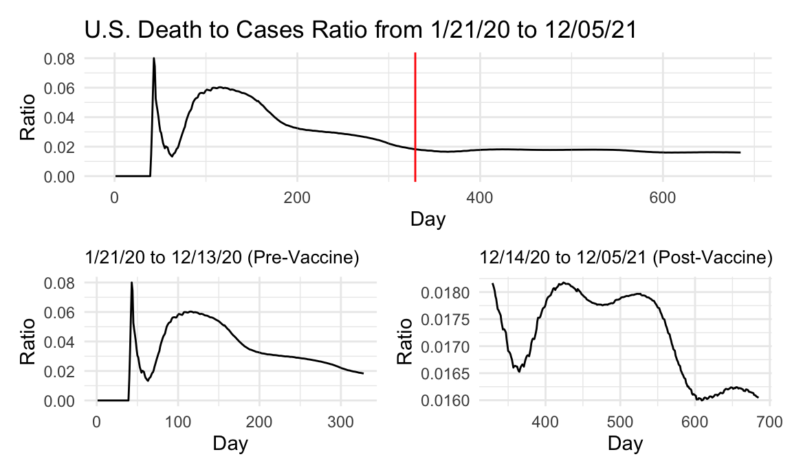
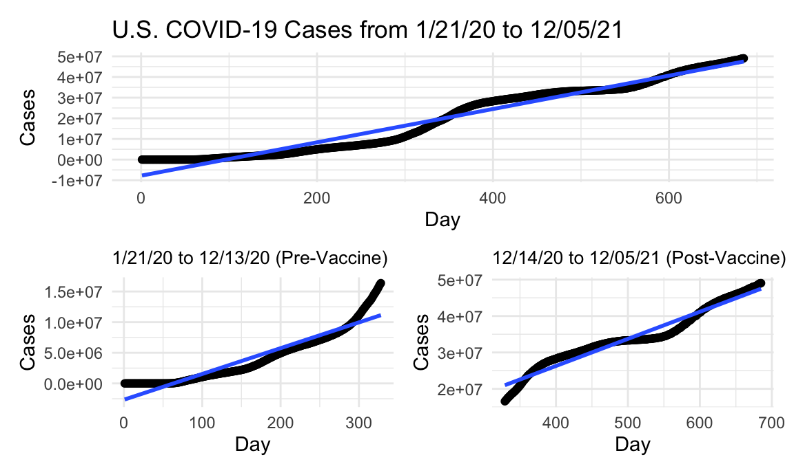
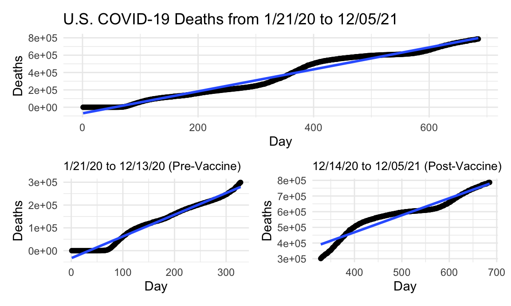

library(tidyverse)
library(patchwork)
library(plotly)
knitr::opts_chunk$set(
fig.width = 6,
fig.asp = .6,
out.width = "90%"
)
theme_set(theme_minimal() + theme(legend.position = "bottom"))
options(
ggplot2.continuous.colour = "viridis",
ggplot2.continuous.fill = "viridis"
)
scale_colour_discrete = scale_colour_viridis_d
scale_fill_discrete = scale_fill_viridis_dus_covid = read_csv("./data/us.csv") %>%
mutate(day = 1:685,
dc_ratio = deaths/cases,
new_cases = cases - lag(cases, default = first(cases)),
new_deaths = deaths - lag(deaths, default = first(deaths)))In order to investigate the effect that vaccine release had on the trajectory of the pandemic, we first had to separate our data into pre-vaccine and post-vaccine dates. The date 12/14/20 was used as the date when vaccines became available in the U.S. Date was converted to “day of pandemic” in order to fit a line of best fit on a numeric variable instead of YYYY-MM-DD date format. The data from NY Times consisted of cumulative case and death counts, and from this we first looked at the death to case ratio curve overall, then separated into pre- and post-vaccine availability to see whether the presence of a vaccine changed the death/case ratio. Below is a look at that data for the entire United States.
total_ratio_p =
us_covid %>%
ggplot(aes(x = day, y = dc_ratio)) +
geom_line() +
labs(title = "U.S. Death to Cases Ratio from 1/21/20 to 12/05/21",
x = "Day", y = "Ratio") +
geom_vline(xintercept = 329, linetype="solid",
color = "red", size=0.5)
pre_vacc_ratio_p =
us_covid %>%
slice(1:328) %>%
ggplot(aes(x = day, y = dc_ratio)) +
geom_line() +
labs(title = "1/21/20 to 12/13/20 (Pre-Vaccine)",
x = "Day", y = "Ratio") +
theme(plot.title = element_text(size=10))
post_vacc_ratio_p =
us_covid %>%
slice(329:685) %>%
ggplot(aes(x = day, y = dc_ratio)) +
geom_line() +
labs(title = "12/14/20 to 12/05/21 (Post-Vaccine)",
x = "Day", y = "Ratio") +
theme(plot.title = element_text(size=10))
total_ratio_p / (pre_vacc_ratio_p + post_vacc_ratio_p)
Looking at the data, we can see that there is a big initial jump in the United States as a whole in the first 100 days of the pandemic. This observation may be skewed by states that were not as quick to believe that a real pandemic was unfolding, and downplaying COVID as a common cold or similar illness until the death/case ratio approached 10%. At that point, even the skeptics may have realized that this was a novel virus that was more deadly than any endemic disease or illness in the United States. Even before vaccine availability, there is a decrease in the death/case ratio, likely because of mask mandates, lockdowns, and social distancing guidelines. By the time the vaccine is available, the death/case ratio has tapered off. Keep in mind though, that around winter of 2020 was the biggest spike in cases that had been observed up until that point, far more than in ~April 2020. For this reason, it seems like the availability of the vaccine may have had a role in keeping the death/case ratio low, because even if breakthrough cases existed they weren’t leading to deaths like unvaccinated cases. In addition, even though there is a spike in the post-vaccine availability curve, it never tops a ratio of 2%, indicating that uptake of the vaccine was sufficient enough to keep the spike in cases from creating a big spike in the death to case ratio.
us_newcase =
us_covid %>%
ggplot(aes(x = date, y = new_cases)) +
# geom_point() +
geom_path() +
labs(title = "New COVID Cases and Deaths (Plotly)", x = "Date", y = "New Cases")
ggply_us_newcase = ggplotly(us_newcase)
us_newdeath =
us_covid %>%
ggplot(aes(x = date, y = new_deaths)) +
# geom_point() +
geom_path() +
labs(x = "Date", y = "New Deaths")
ggply_us_newdeath = ggplotly(us_newdeath)
subplot(ggply_us_newcase, ggply_us_newdeath,
nrows = 2, shareX = TRUE, titleY = TRUE, titleX = TRUE, margin = 0.1)Based on the plots of new cases and deaths, we can see that both figures were at an all time high when the vaccine became available. Even across the whole United States, the numbers of new cases and deaths began to drop after vaccine release, despite many confounding factors that were also present. Even when cases began to rise again, likely due to nation wide vaccine hesitancy or other factors, they never reached the level they were at previously. In addition, the number of new deaths never seemed to top 75% of the previous high, indicating that uptake of the vaccine likely saved many lives. We also know that many of the deaths that happened after vaccine release due to COVID were attributed to non-vaccinated individuals, further bolstering the case that the vaccine was integral in saving the lives of Americans nationwide.
total_us_case_lm =
lm(cases ~ day, data = us_covid) %>%
broom::tidy()
total_us_case_p =
us_covid %>%
ggplot(aes(x = day, y = cases)) +
geom_point() +
geom_smooth(method = "lm", formula = y ~ x) +
labs(title = "U.S. COVID-19 Cases from 1/21/20 to 12/05/21",
x = "Day", y = "Cases")
pre_vacc_case_lm =
us_covid %>%
slice(1:328) %>%
lm(cases ~ day, data = .) %>%
broom::tidy()
pre_vacc_case_p =
us_covid %>%
slice(1:328) %>%
ggplot(aes(x = day, y = cases)) +
geom_point() +
geom_smooth(method = "lm", formula = y ~ x) +
labs(title = "1/21/20 to 12/13/20 (Pre-Vaccine)",
x = "Day", y = "Cases") +
theme(plot.title = element_text(size=10))
post_vacc_case_lm =
us_covid %>%
slice(329:685) %>%
lm(cases ~ day, data = .) %>%
broom::tidy()
post_vacc_case_p =
us_covid %>%
slice(329:685) %>%
ggplot(aes(x = day, y = cases)) +
geom_point() +
geom_smooth(method = "lm", formula = y ~ x) +
labs(title = "12/14/20 to 12/05/21 (Post-Vaccine)",
x = "Day", y = "Cases") +
theme(plot.title = element_text(size=10))
total_us_case_p / (pre_vacc_case_p + post_vacc_case_p)
As far as raw case numbers are concerned, we obviously are seeing an ever increasing number of cases. The rate at which the cases increase though, appears to have been altered by the vaccine’s release at first glance. As alluded to above, the largest spike occurred right around when the vaccine became available, in mid-December. At that point, there was a massive surge in cases, which appears to have also been tapered off by the availability of the vaccine. Of course, there are numerous factors at play here as well, which we will attempt to explore in the rest of this report. We can see though that as the cases begin to spike right before vaccine availability, they begin to taper off once the vaccine becomes available. Whether this is due to the vaccine’s effects or because of seasonal changes is a matter of debate, although we have gathered and investigated a large amount of vaccine uptake, distribution, and availability data to attempt to make an association regarding this question. Although a line of best fit is used here to roughly estimate the number of cases per day before and after the vaccine, there appear to be a higher rate of cases after the vaccine is available. Visually, however, the pre-vaccine case curve follows a parabolic and ever-increasing trend, whereas after availability, it seems to flatten out a bit before making another spike. This also is a matter of debate, but could be due to the relaxing of mandates and a “return to normal” feeling amongst the population, vaccinated or not. It has been reported that over 90% of cases and deaths between day 550-600 were attributable to non-vaccinated individuals, and that may be the reason for this observation.
total_us_death_lm =
lm(deaths ~ day, data = us_covid) %>%
broom::tidy()
total_us_death_p =
us_covid %>%
ggplot(aes(x = day, y = deaths)) +
geom_point() +
geom_smooth(method = "lm", formula = y ~ x) +
labs(title = "U.S. COVID-19 Deaths from 1/21/20 to 12/05/21",
x = "Day", y = "Deaths")
pre_vacc_death_lm =
us_covid %>%
slice(1:328) %>%
lm(deaths ~ day, data = .) %>%
broom::tidy()
pre_vacc_death_p =
us_covid %>%
slice(1:328) %>%
ggplot(aes(x = day, y = deaths)) +
geom_point() +
geom_smooth(method = "lm", formula = y ~ x) +
labs(title = "1/21/20 to 12/13/20 (Pre-Vaccine)",
x = "Day", y = "Deaths") +
theme(plot.title = element_text(size=10))
post_vacc_death_lm =
us_covid %>%
slice(329:685) %>%
lm(deaths ~ day, data = .) %>%
broom::tidy()
post_vacc_death_p =
us_covid %>%
slice(329:685) %>%
ggplot(aes(x = day, y = deaths)) +
geom_point() +
geom_smooth(method = "lm", formula = y ~ x) +
labs(title = "12/14/20 to 12/05/21 (Post-Vaccine)",
x = "Day", y = "Deaths") +
theme(plot.title = element_text(size=10))
total_us_death_p / (pre_vacc_death_p + post_vacc_death_p)
We see a similar trend for the deaths in the United States due to COVID as with the cases, although of course at a lower number. One thing that is significantly different though is the change in slope of the line of best fit between pre-vaccine and post-vaccine availability. While the number of cases seemed to rise at a higher rate after the vaccine became available, the rise in deaths was mild, as the slope was almost the same before and after vaccine release. This may indicate that the vaccine is more effective at preventing people who contract the virus from dying.
tibble(
metric = c("intercept", "slope"),
total_case = pull(total_us_case_lm, estimate),
pre_vacc_case = pull(pre_vacc_case_lm, estimate),
post_vacc_case = pull(post_vacc_case_lm, estimate),
total_death = pull(total_us_death_lm, estimate),
pre_vacc_death = pull(pre_vacc_death_lm, estimate),
post_vacc_death = pull(post_vacc_death_lm, estimate)) %>%
knitr::kable()| metric | total_case | pre_vacc_case | post_vacc_case | total_death | pre_vacc_death | post_vacc_death |
|---|---|---|---|---|---|---|
| intercept | -7794675.04 | -2661121.00 | -3491838.72 | -70361.639 | -32873.6457 | 33469.235 |
| slope | 80715.65 | 42073.19 | 74445.31 | 1266.709 | 952.0364 | 1087.785 |
U.S. Post-vax/Pre-vax Case Ratio: 1.7694241 \(\\\) U.S. State Post-vax/Pre-vax Death Ratio: 1.1425874
For reference, here are the slopes of the lines of best fit to attempt to investigate the effect that the vaccine’s avaiability had on the daily increase in cases and deaths, roughly. We can see that although the cases continued to rise at a even sharper rate, the amount of deaths held constant even though the pandemic continued on. This seems to indicate that less people who were catching the virus were actually dying, and this is likely attributable to the presence of a vaccine. We’ll attempt to corroborate this finding with vaccination data in the following pages of this report. We realize that the curves and rates for these metrics for the entire United States make it hard to delineate the underlying reasons and factors, so we thought it would be interesting to investigate these numbers on a state by state basis, and then focus in on New York state and New York City to see how the trends in such a dense area may have differed from the United States at large. Of course, the division in attitudes towards vaccination in the United States make it difficult to extrapolate rationale from this aggregated data set.